01
Sense
Receive explicit user input and, where appropriate, explore contextual or affective cues.
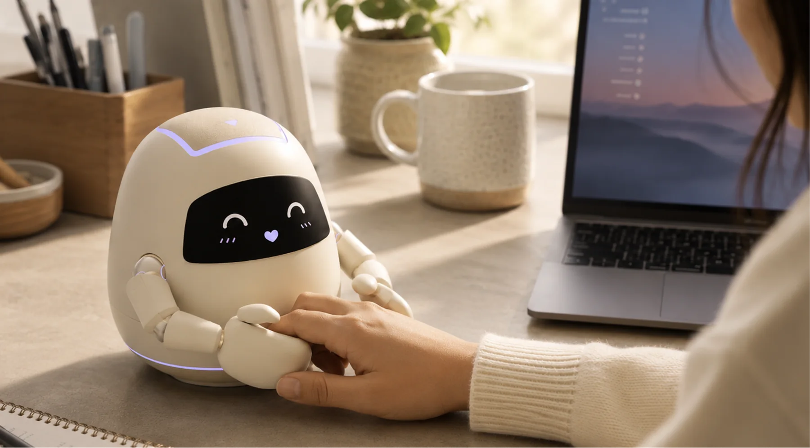
An Embodied Companion for Everyday Well-being.
Mibo is a design-led human–robot interaction exploration that connects a small expressive desktop robot with a companion app. The concept examines how touch, facial expression, arm movement, ambient light, reminders, and reflective interfaces might work together as one interaction system.
The concept brings together affective support, sedentary reminders, physical encouragement, touch acceptance, posture-related needs, and alertness into a single companion relationship rather than a collection of disconnected app notifications.
The design material considers affective need, sitting fatigue, reminder fatigue, touch acceptance, posture need, and alertness across several user groups. I use this here as a design-opportunity map rather than presenting it as a population-level validated claim.
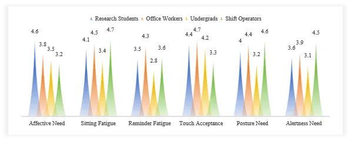
The rounded body and minimal face are designed to feel approachable, while the articulated arms create a physical interaction vocabulary: holding, reaching, guiding, celebrating, and accompanying movement. The palm surfaces provide a clear contact area for touch-based interaction.
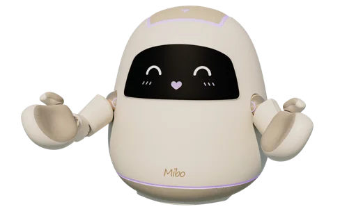
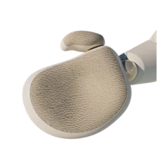
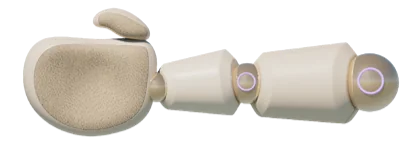
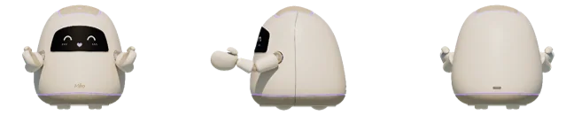
Mibo’s physical interaction vocabulary is designed around a small set of legible social actions. Select each mode to see how the same robot body can communicate a different form of support.
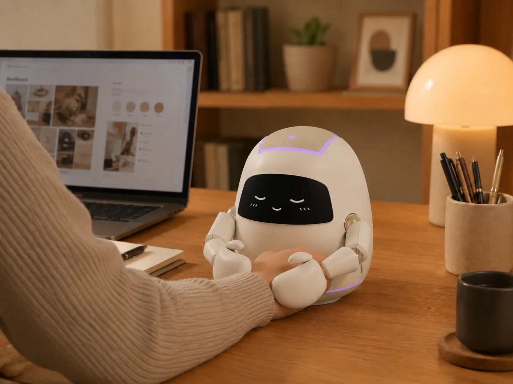
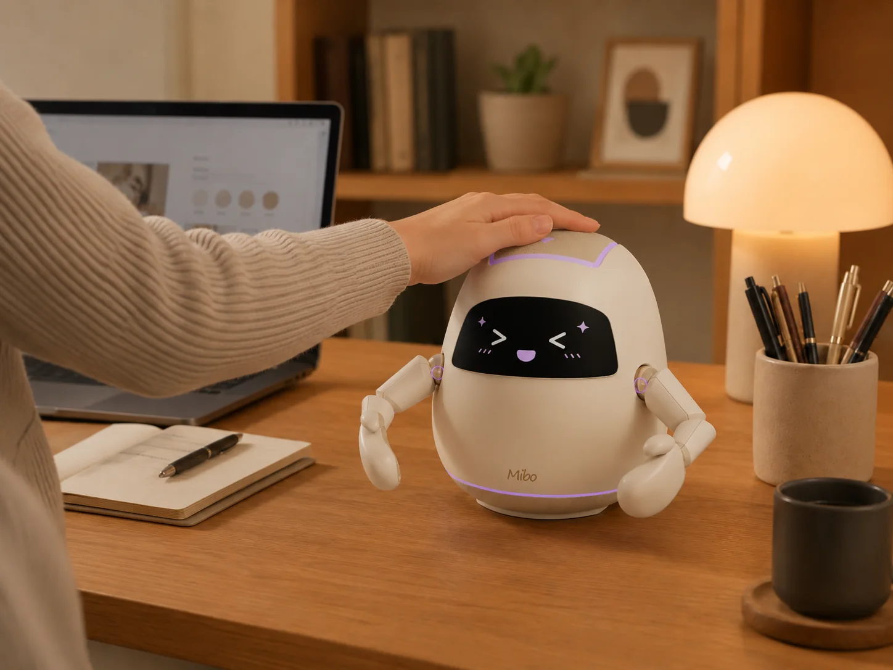
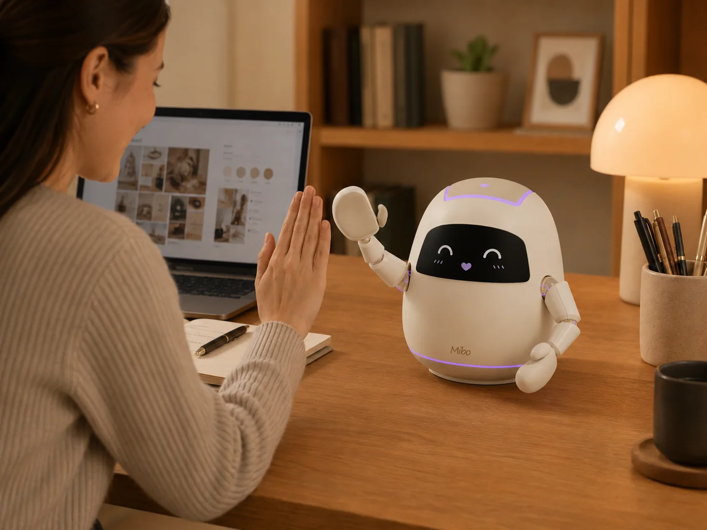
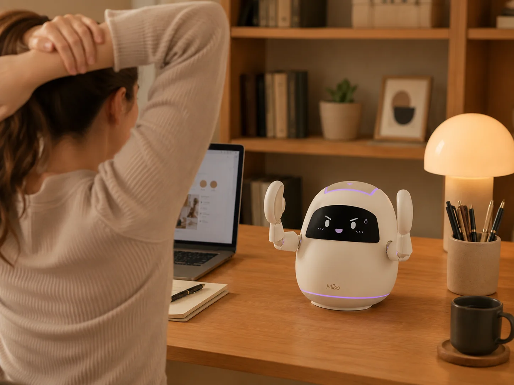
Hand-holding turns physical contact into a deliberate interaction channel. The concept explores how a companion robot could communicate presence without relying on constant speech.
It organizes comfort sessions, movement prompts, emotion-aware concepts, reflection, device control, and weekly summaries without making the robot itself carry every interaction.
Use the navigator to move between the major interaction layers. The app is treated as a companion to the embodied robot rather than a separate dashboard.
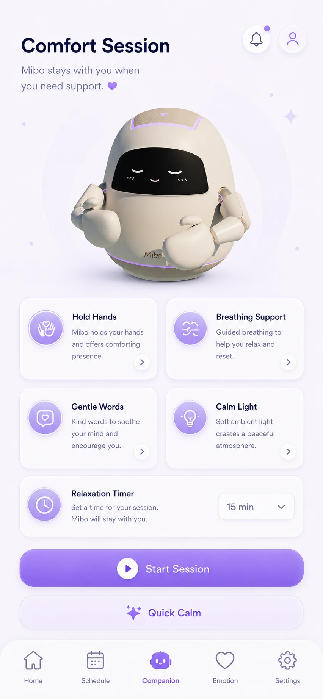
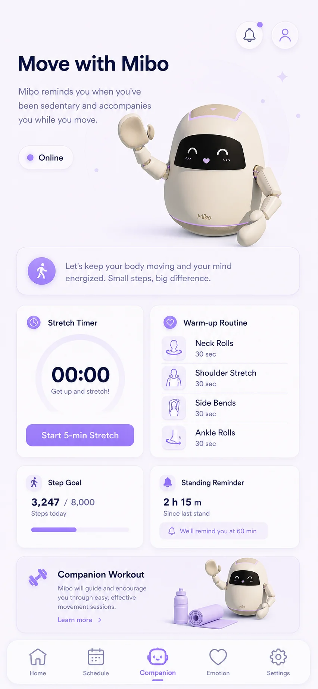
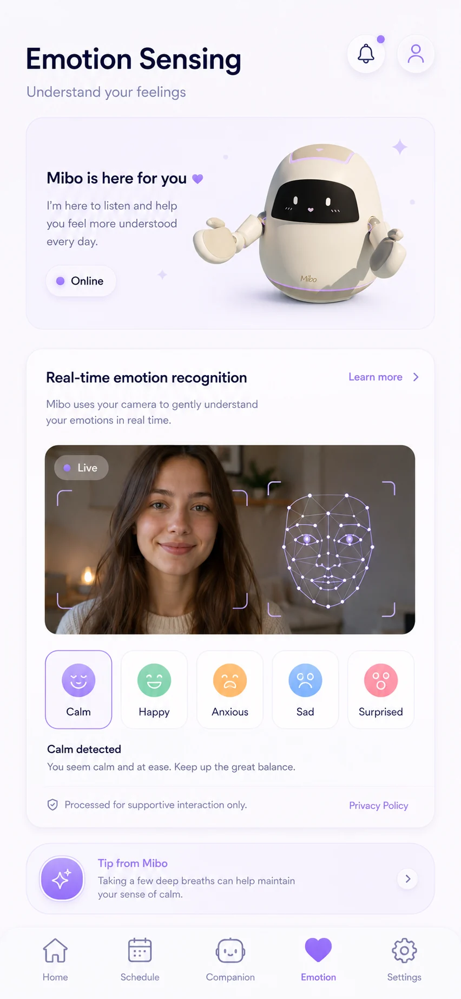
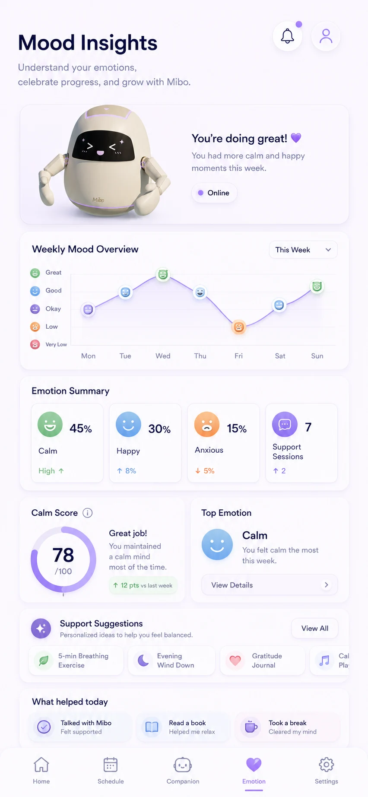
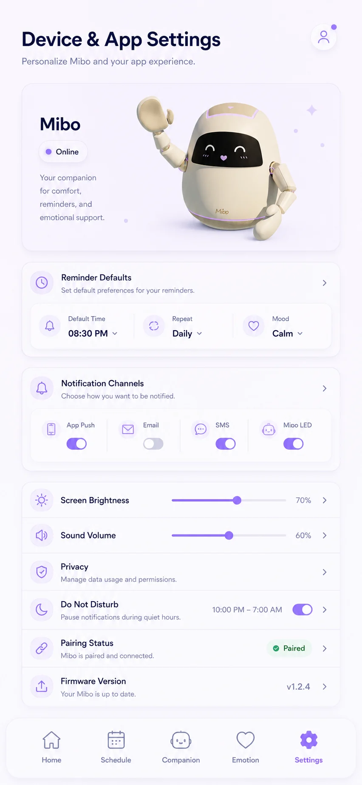
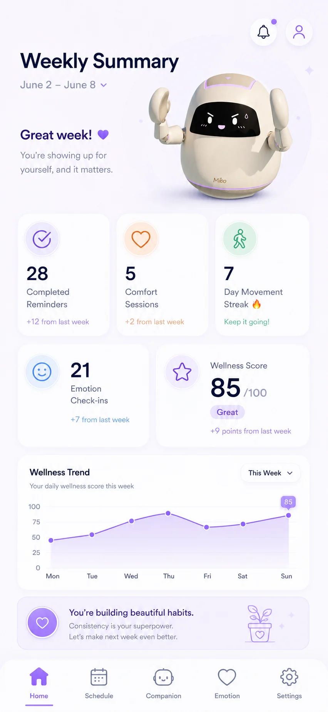
Receive explicit user input and, where appropriate, explore contextual or affective cues.
Use face, light, touch, and arm motion to make the robot’s response legible in the physical space.
Turn reminders into comfort sessions, shared movement, or other concrete actions.
Use mood insights and weekly summaries to help users review patterns over time.
Expression and posture shift with the interaction context—from quiet presence to concern, encouragement, and active movement.
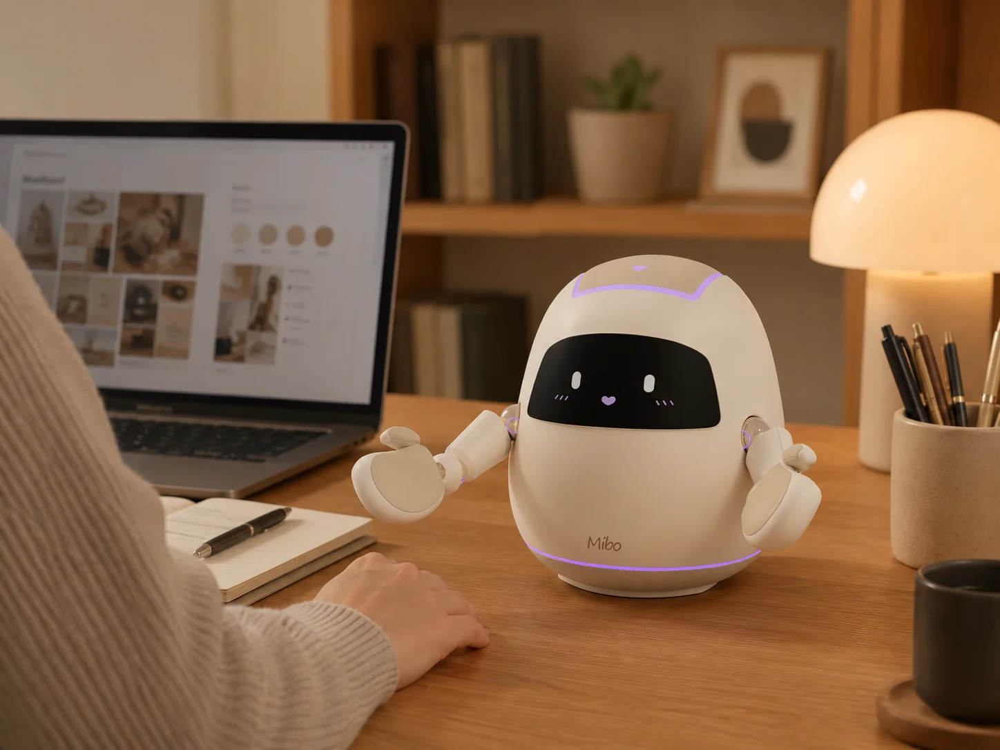
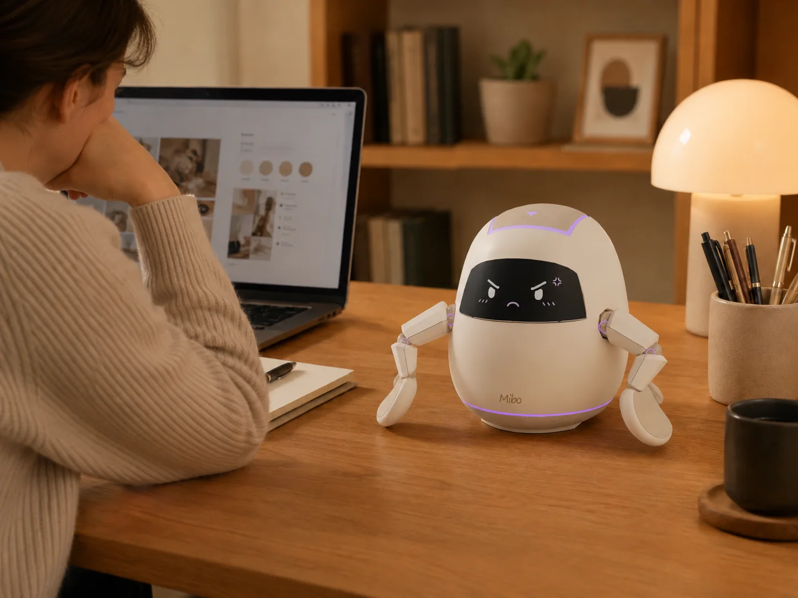
Mibo helped me explore a different interaction space from my VR research: physical presence, touch, expressive motion, and a cross-device service ecosystem. A next research step would require prototyping the sensing and robotic behaviors at functional fidelity, then testing whether embodied support changes acceptance, reminder fatigue, emotional comfort, and adherence compared with screen-only interaction.
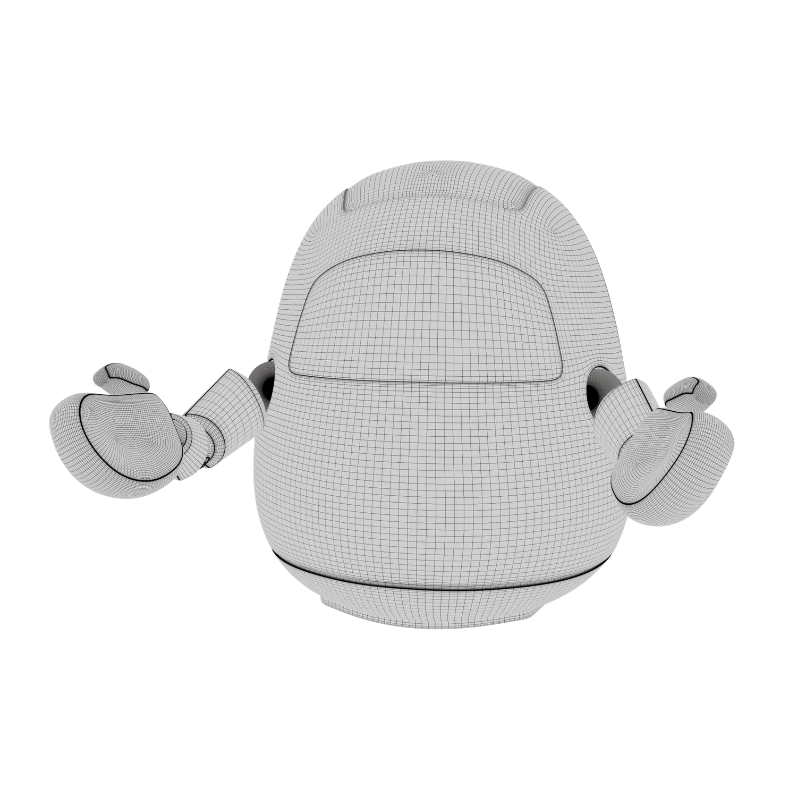